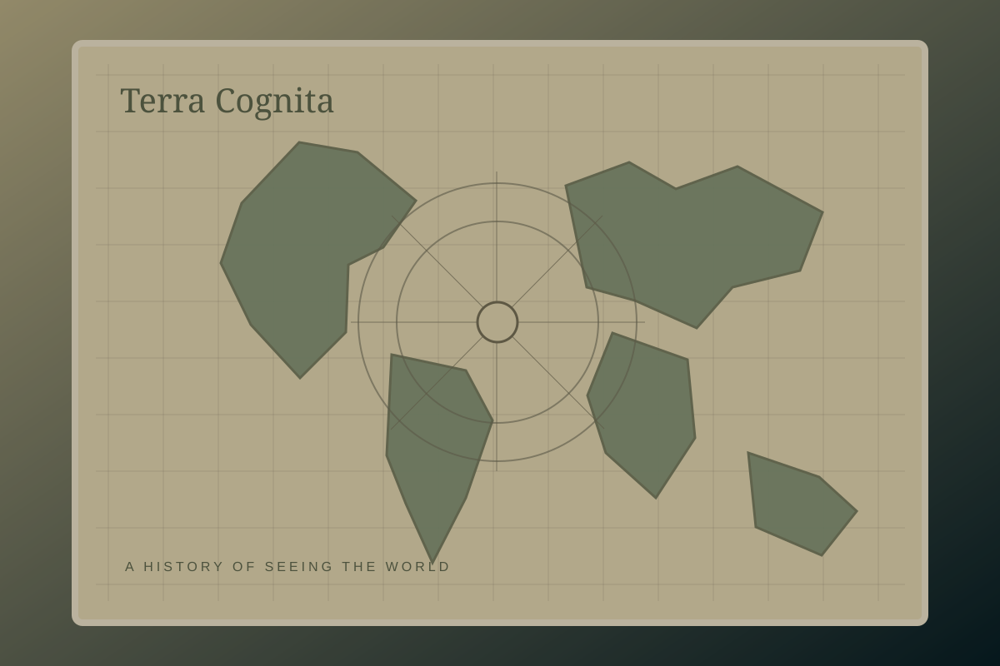
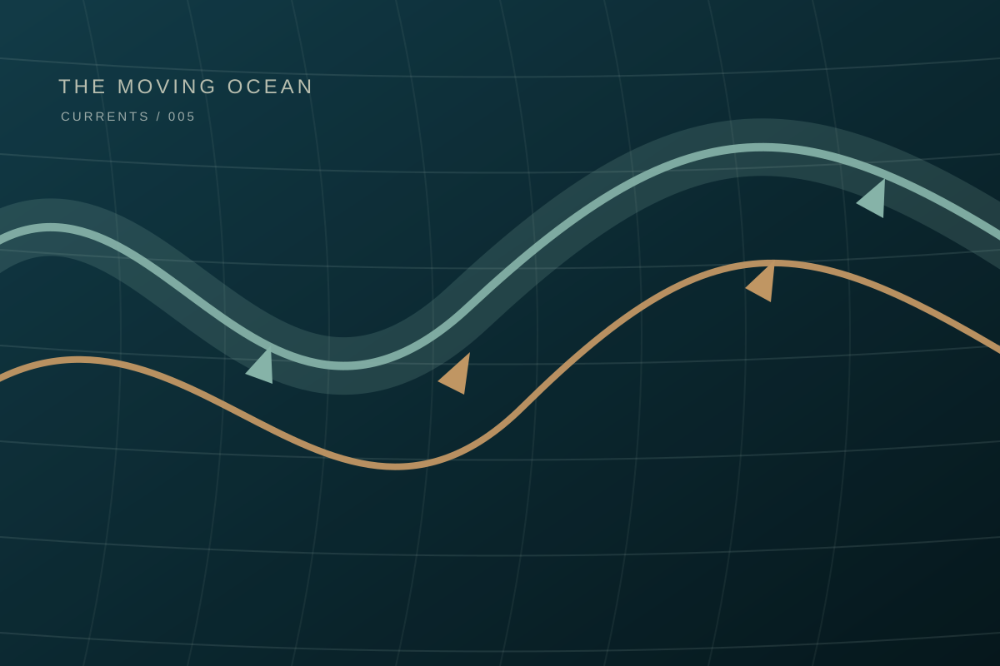

Where should we begin?
Select a point on the map to discover its story. The markers are editorial pointers, not exact scientific measurements.

The Great Lakes: North America’s Inland Seas
Five freshwater lakes, a glacial past, and a watershed that shapes an entire region.

Reading the Land: How Topographic Maps Work
Contour lines make hills, valleys, ridges, and elevation legible on a flat page.

The Restless Earth: A Guide to Tectonic Plates
Why continents drift, ocean floors spread, and earthquakes cluster along boundaries.

The Evolution of World Maps
From hand-drawn coastlines to digital projections, every map is a choice about reality.

The Moving Ocean: How Currents Shape Climate
Surface winds, density differences, and Earth’s rotation keep seawater in motion.

Where Rivers Meet the Sea
Sediment, changing channels, and coastal energy create some of Earth’s richest landforms.

How Mountains Are Made
Collision raises the land, erosion carves it, and deep geological time connects the two.

Seeing Earth from Space
How orbital instruments turn light, heat, and repeated observations into geographic knowledge.